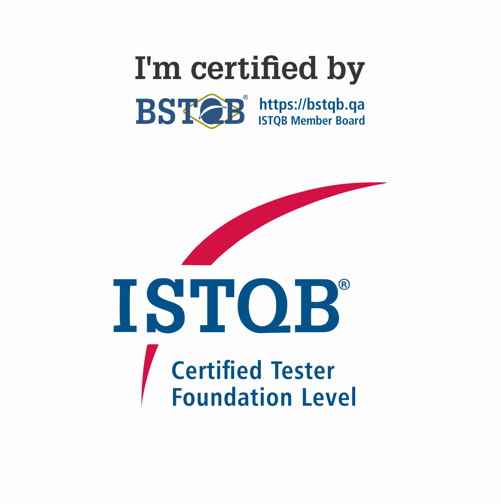

ISTQB Foundation Level (CTFL)
Certificação internacional focada nos fundamentos de testes de software, boas práticas de QA, ciclo de vida de testes e qualidade orientada a processos.
Seja bem-vindo(a) ao meu portfólio. Acredito que qualidade de software vai além de testes: ela impacta pessoas, processos e decisões. Aqui compartilho minha trajetória como QA, minhas habilidades e meu compromisso com sistemas seguros e confiáveis.
Atuo na área de tecnologia desde 2018, iniciando minha trajetória em front-end e encontrando na qualidade de software o espaço onde pude unir análise, estratégia e propósito. Desde 2019, trabalho com QA, sempre movida pelo aprendizado contínuo e pela busca constante por evolução.
Sou entusiasta de boas práticas em qualidade de software e segurança da informação, e acredito que software de qualidade nasce da curiosidade, do olhar atento aos detalhes e da responsabilidade com quem está do outro lado da tela. Compartilho conhecimento por meio de conteúdos online, contribuindo para o crescimento de outros profissionais e para a construção de produtos mais confiáveis.
Fora do ambiente profissional, tenho paixão por viajar e explorar novos lugares. Conhecer diferentes culturas e realidades amplia minha visão de mundo, reforça minha adaptabilidade e inspira a forma como encaro desafios — na tecnologia e na vida.
Meu papel como Quality Assurance vai além da execução de testes. Atuo como facilitadora da qualidade dentro do time, participando desde o refinamento de requisitos até a validação final das entregas.
Sou responsável por antecipar riscos, garantir aderência às regras de negócio, validar fluxos críticos e contribuir para decisões técnicas e funcionais que impactam diretamente o produto e seus usuários.

Certificação internacional focada nos fundamentos de testes de software, boas práticas de QA, ciclo de vida de testes e qualidade orientada a processos.
Quer conversar, trocar ideias ou saber mais sobre meu trabalho? Fique à vontade para entrar em contato comigo.
📧 Email: contato.carolineqa@gmail.com